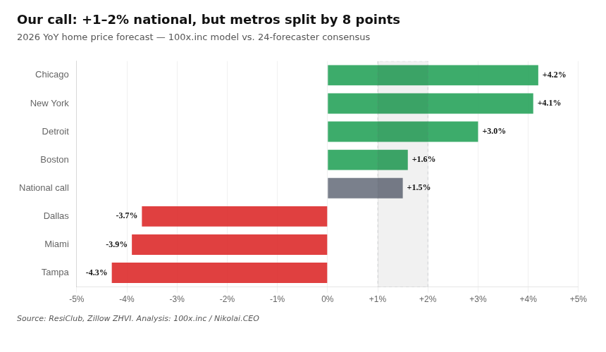
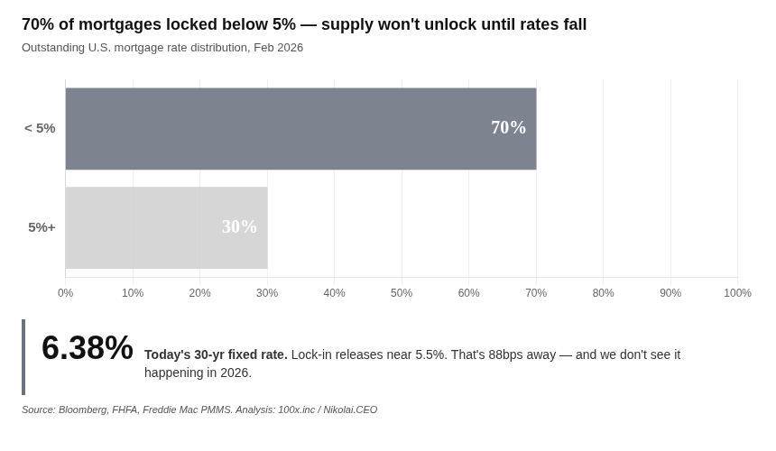
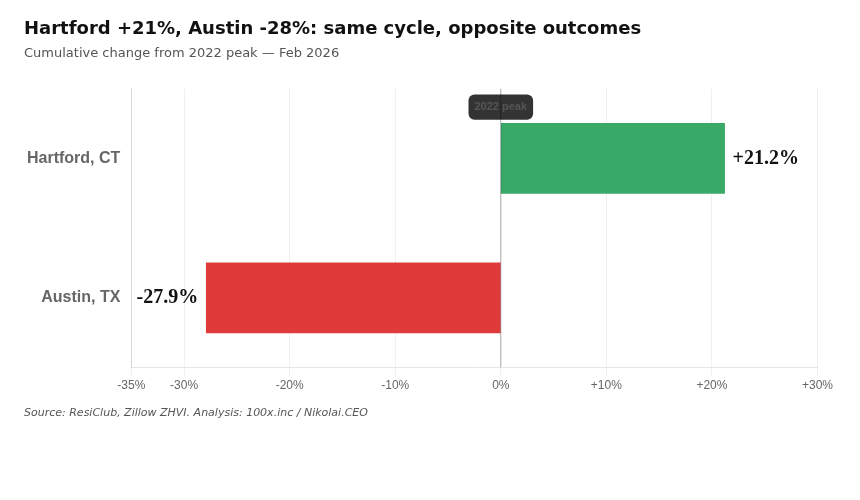
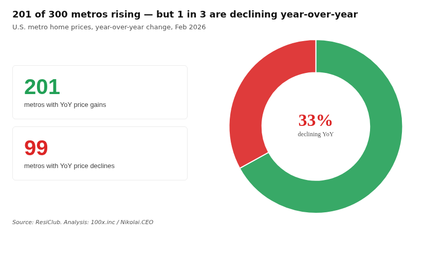
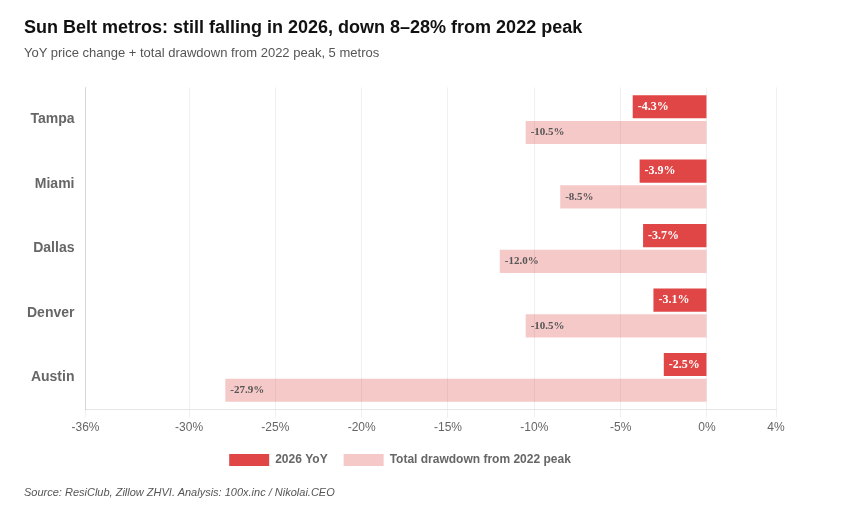
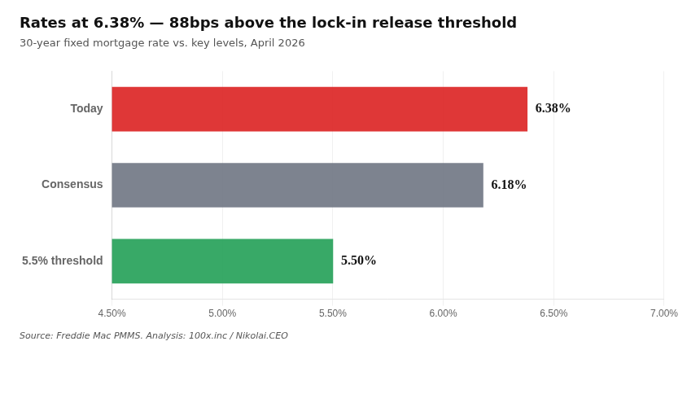
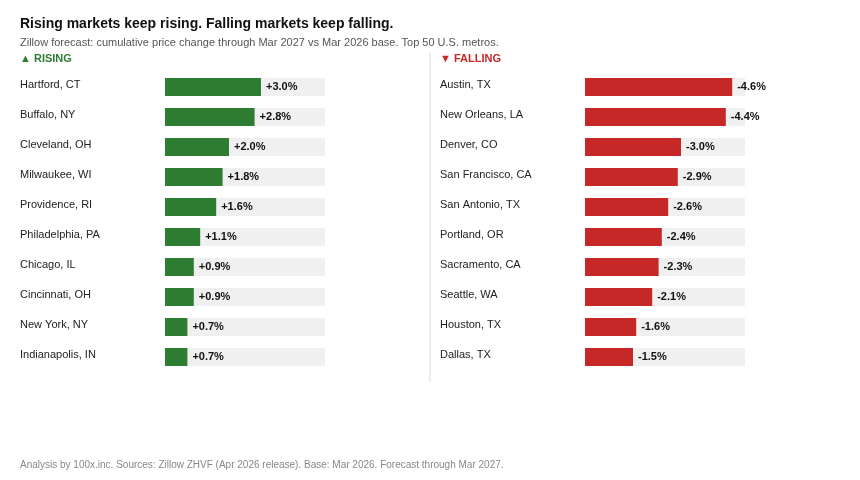

🏡Our prediction of 2026 housing market
Consensus is right on the average. Wrong on the spread.
You've read the headlines: 2026 is flat nationally, up 0–1%.
True on average. False on your block. The national number is the mean of two markets moving in opposite directions. Your zip code decides which one you live in.

Three reasons. Each one independent. Together they explain every number above.
Reason 1: Supply split by geography
Midwest and Northeast inventory sits 20–40% below pre-pandemic 2019 levels. Sun Belt inventory is at or above 2019 levels, flooded by builder output since 2022. The inventory map and the price map are the same map.


Reason 2: Rate lock freezes demand everywhere, but hits expensive markets hardest
70% of existing mortgages are locked below 5%. Selling means giving that up. Nobody sells. But the damage is not equal across markets. Sun Belt and coastal buyers took on peak-price debt at 2020–21 rates. Their new payment, at 6.38%, doubles. Midwest prices are lower in absolute terms. Move-up buyers there face a smaller shock. Demand stays alive where prices stayed contained.


Reason 3: No rate rescue arrives in 2026
Listings unlock when mortgage rates fall under 5.5%. The current rate is 6.38%. Consensus puts year-end at 6.18%. The threshold does not open. The split does not narrow.

Your address determines your 2026.
21 of 24 major forecasters expect prices to rise in 2026. Consensus: +1.43%.
Consensus is not wrong about the direction. It is wrong about the distribution. A +1.43% national average conceals a +3% outcome in Hartford and a −5% outcome in Austin. The spread is your signal. Not the mean.
Below: the Zillow forward model through March 2027 for the 50 largest U.S. metros. This is your market.

The markets consensus underprices: Midwest mid-size cities. Hartford (+3.0%), Buffalo (+2.8%), Cleveland (+2.0%), Milwaukee (+1.8%). Structurally undersupplied. Gains compound from a low base.
The markets consensus overprices: Sun Belt metros where builder supply has not cleared. Austin (−4.6%), Denver (−3.0%), San Francisco (−2.9%). The overhangs hold.
This call breaks if rates fall under 5.5%, distressed listings flood the market, or builders cut prices deep enough to drag resale down. None of those happens in 2026.